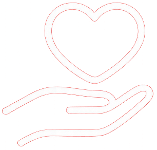
¿Que buscamos?
Nuestro objetivo es erradicar la pobreza en todas sus formas en todo el mundo para 20230.
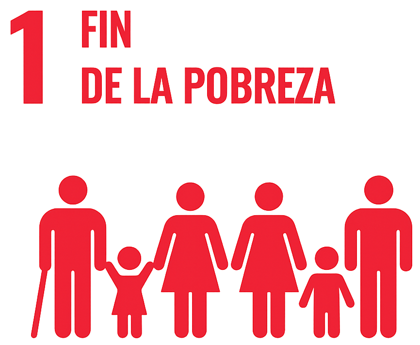
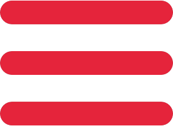
Recibí información sobre acciones y proyectos para ayudar a combatir la pobreza.

Nuestro objetivo es erradicar la pobreza en todas sus formas en todo el mundo para 20230.
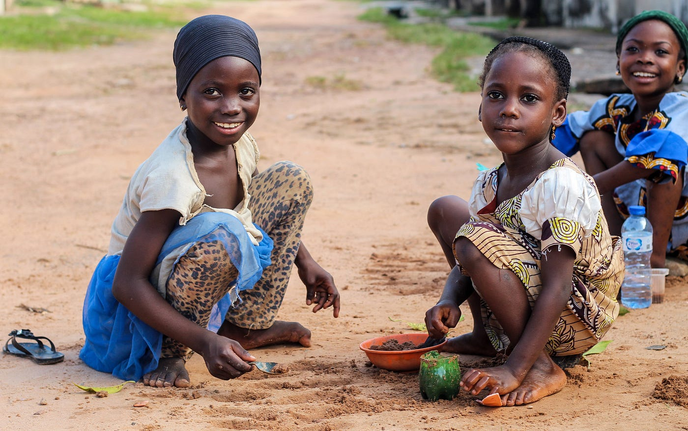
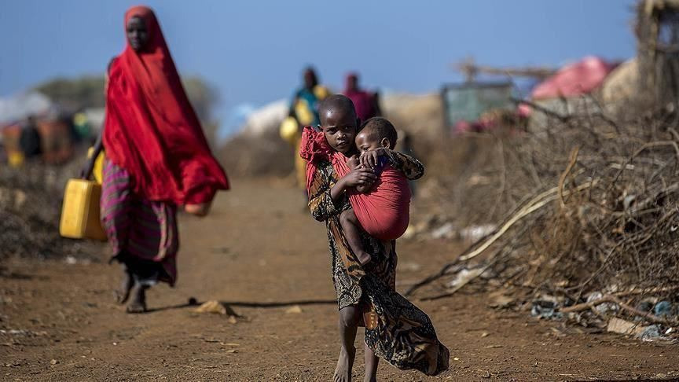
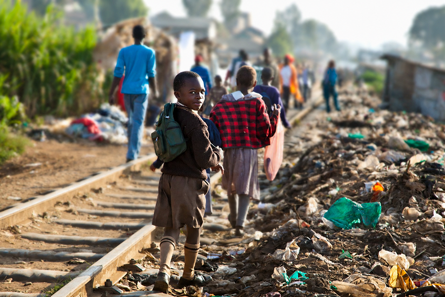
La pobreza no es solo falta de ingresos: también limita el acceso a educación, salud, vivienda y oportunidades.
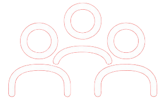
Viven en situación de pobreza extrema con menos de 2,15 dólares al día
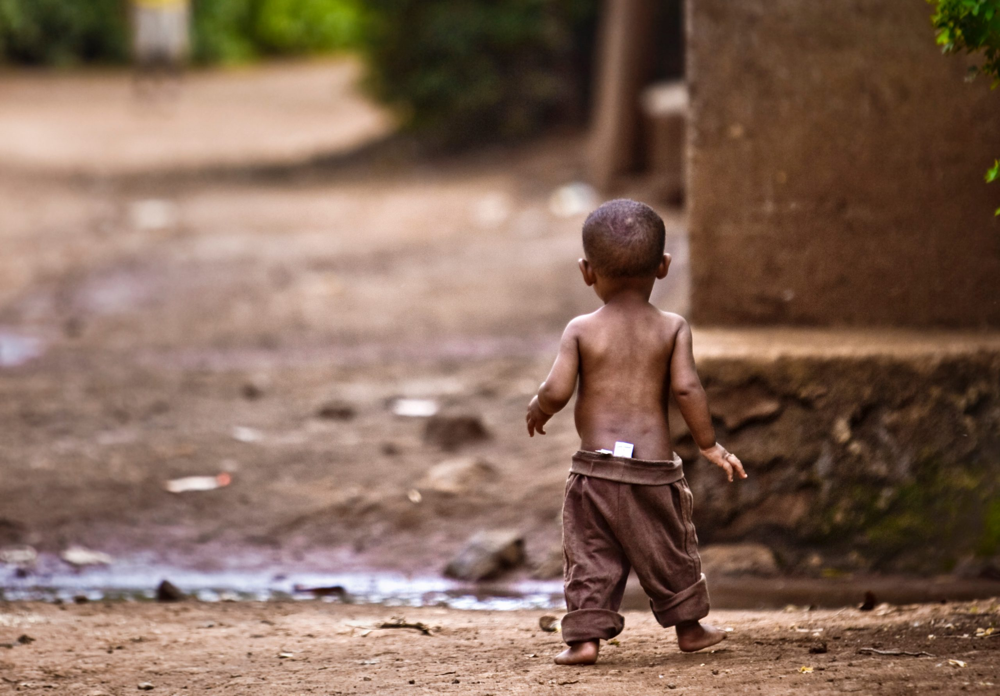
Meta 1.1

Para 2030, buscamos garantizar que ninguna persona viva sin acceso a alimentación, vivienda y recursos básicos es el primer paso para construir un futuro más justo y sostenible.
Conocer más →Meta 1.2

La educación, el empleo digno y el acceso a servicios esenciales permiten que más personas desarrollen su potencial y mejoren su calidad de vida.
Conocer más →Meta 1.3
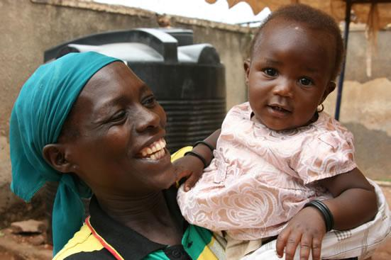
Los sistemas de apoyo social ayudan a reducir desigualdades y brindan seguridad a familias y comunidades en situación de vulnerabilidad.
Conocer más →Meta 1.4
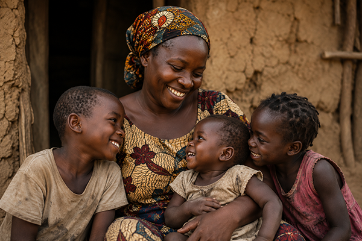
Promover la igualdad de acceso a herramientas, conocimientos y oportunidades económicas favorece el crecimiento y la inclusión social.
Conocer más →Meta 1.5
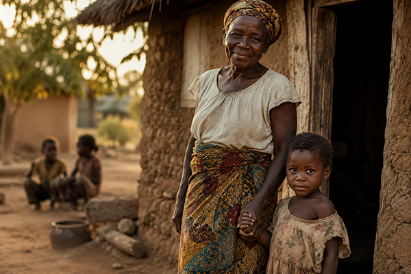
Fortalecer la capacidad de adaptación frente a crisis económicas, sociales y ambientales ayuda a construir sociedades más fuertes y preparadas para el futuro.
Conocer más →